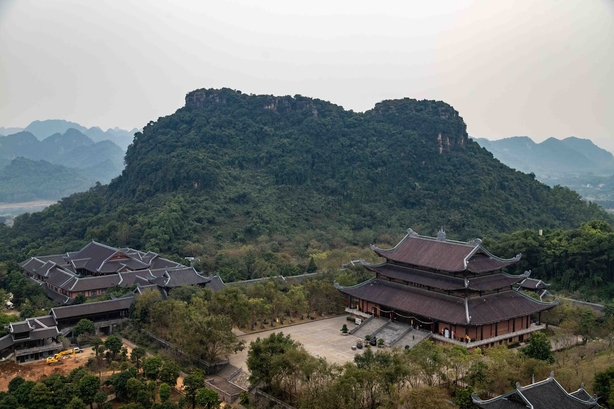
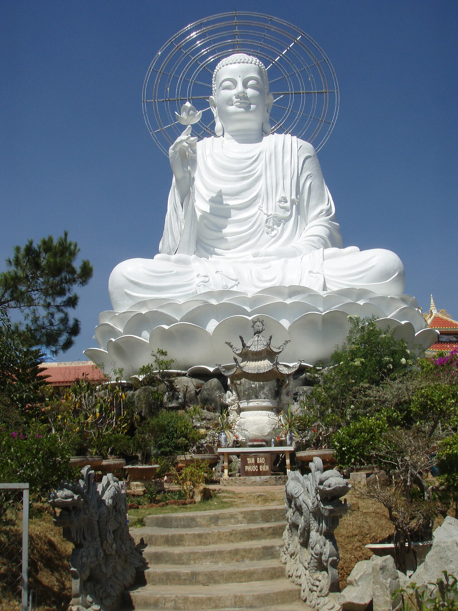
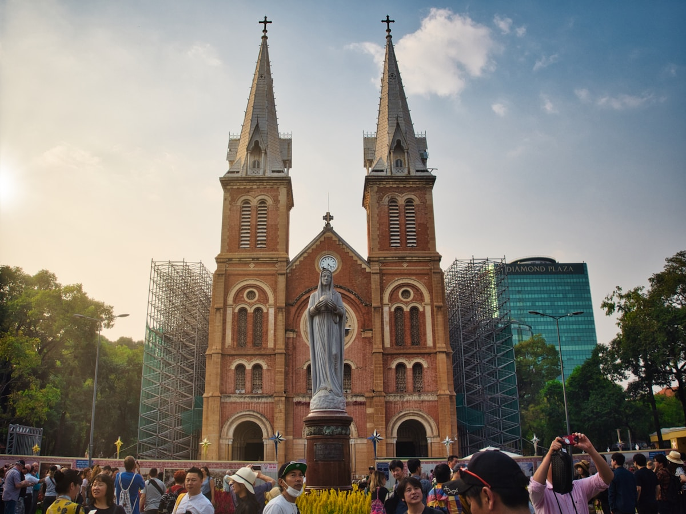
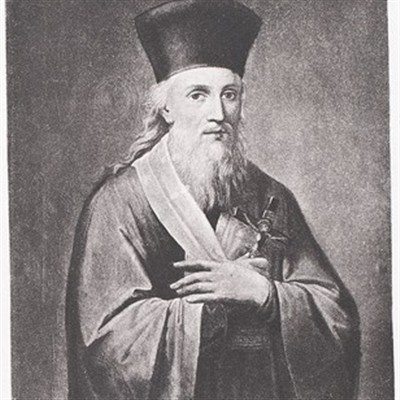
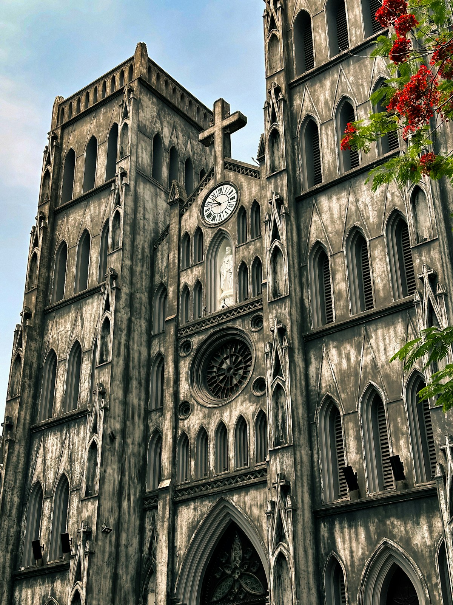
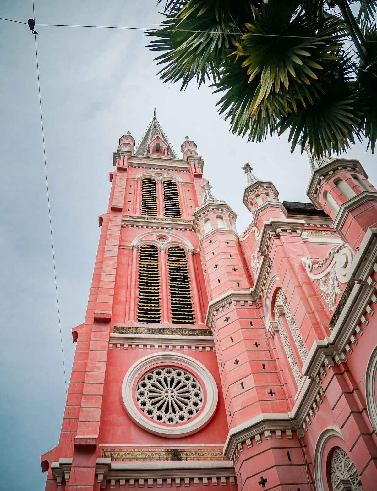

PHẬT GIÁO/CÔNG GIÁO
ĐỒNG HÀNH CÙNG DÂN TỘC
Tôn giáo – Dân tộc – Tổ quốc Việt Nam Xã hội chủ nghĩa
Quan điểm Mác-Lênin về Tôn giáo
Theo quan điểm Mác-Lênin, tôn giáo là một hình thái ý thức xã hội, phản ánh một cách hoang đường, hư ảo hiện thực khách quan vào đầu óc con người. Tôn giáo là sản phẩm của lịch sử xã hội, không phải hiện tượng siêu nhiên.
Tôn giáo
Hình thái ý thức xã hội phản ánh hiện thực khách quan theo cách hư ảo, thần thánh hóa. Là sản phẩm của lịch sử, xuất hiện khi xã hội còn ở trình độ thấp.
Tín ngưỡng
Nhu cầu tinh thần chính đáng của con người — niềm tin vào điều thiêng liêng, hướng thiện. Khác tôn giáo ở chỗ không có hệ thống giáo lý, tổ chức chặt chẽ.
Mê tín dị đoan
Tin tưởng mù quáng, lệch lạc vào những điều hư ảo gây hại cho sức khỏe, kinh tế, đạo đức xã hội. Cần phân biệt rõ với tín ngưỡng chính đáng.
Nguồn gốc của Tôn giáo
Nguồn gốc Xã hội
Sự bất lực và sợ hãi của con người trước tự nhiên và các lực lượng xã hội xa lạ, áp bức trong xã hội có giai cấp.
Nguồn gốc Nhận thức
Sự tuyệt đối hóa, thần thánh hóa một mặt nào đó của nhận thức khi giới hạn nhận thức chưa vượt qua được thực tại.
Nguồn gốc Tâm lý
Nhu cầu cầu an, sợ hãi trước cái chết, đau khổ và bế tắc khiến con người tìm đến tôn giáo như nơi nương tựa tinh thần.
"Tôn giáo là thuốc phiện của nhân dân" — không phải theo nghĩa tiêu cực, mà là tôn giáo có tác dụng giảm đau tinh thần trong hoàn cảnh khó khăn, nhưng không giải quyết được nguyên nhân gốc rễ của đau khổ xã hội.
Tính chất của Tôn giáo
Tính quần chúng
~85% dân số thế giới có tín ngưỡng tôn giáo. Tôn giáo đáp ứng nhu cầu tinh thần chính đáng của quần chúng, không thể xóa bỏ bằng mệnh lệnh hành chính.
Tính chính trị
Trong xã hội có giai cấp, tôn giáo luôn mang màu sắc chính trị. Giai cấp thống trị có thể lợi dụng tôn giáo để củng cố quyền lực.
Tính đạo đức
Mọi tôn giáo đều có hệ thống giá trị đạo đức: yêu thương, công bằng, trung thực, vị tha... Cần kế thừa có chọn lọc trong xây dựng đạo đức XHCN.
Chính sách Tôn giáo của Đảng và Nhà nước
Tín ngưỡng là nhu cầu tinh thần lâu dài
Tín ngưỡng, tôn giáo là nhu cầu tinh thần của một bộ phận nhân dân, đang và sẽ tồn tại cùng dân tộc. Nhà nước tôn trọng và tạo điều kiện để đồng bào các tôn giáo thực hành tín ngưỡng lành mạnh.
Hiến pháp 2013 — Điều 24: Quyền tự do tín ngưỡng
Mọi người có quyền tự do tín ngưỡng, tôn giáo, theo hoặc không theo một tôn giáo nào. Các tôn giáo bình đẳng trước pháp luật. Không ai được xâm phạm tự do tín ngưỡng hoặc lợi dụng tín ngưỡng để vi phạm pháp luật.
Đoàn kết đồng bào tôn giáo
Tăng cường đoàn kết đồng bào theo các tôn giáo khác nhau, giữa đồng bào theo tôn giáo và không theo tôn giáo. Phát huy những giá trị văn hóa, đạo đức tốt đẹp của tôn giáo.
Phát huy giá trị văn hóa, đạo đức tôn giáo
Động viên chức sắc, tín đồ các tôn giáo sống "tốt đời, đẹp đạo", đóng góp tích cực cho công cuộc xây dựng và bảo vệ Tổ quốc.
Luật Tín ngưỡng, Tôn giáo 2016
Thông qua ngày 18/11/2016 (hiệu lực 01/01/2018) — khung pháp lý toàn diện đầu tiên về tín ngưỡng, tôn giáo. Bảo đảm quyền tự do tín ngưỡng; các tôn giáo bình đẳng trước pháp luật; phân biệt nhu cầu tín ngưỡng chính đáng với lợi dụng tôn giáo.
Vấn đề theo đạo và truyền đạo
Đấu tranh chống mê tín dị đoan, chống lợi dụng tôn giáo để vi phạm pháp luật hoặc can thiệp vào công việc nội bộ của Nhà nước. Nghiêm cấm việc ép buộc người dân theo đạo.
Phật giáo Việt Nam
18.544 Cơ sở thờ tự
~80% Dân số ảnh hưởng
Phương châm:
Đạo pháp – Dân tộc – CNXH
Lịch sử đồng hành với Dân tộc
Phật giáo xuất hiện tại Giao Chỉ. Luy Lâu là trung tâm lớn nhất
Lan rộng toàn miền Bắc, gắn với tinh thần chống Bắc thuộc
Hoàng kim — Quốc giáo, thiền phái Trúc Lâm Yên Tử ra đời
Phật giáo đồng hành kháng chiến chống Pháp, chống Mỹ
GHPGVN thành lập, thống nhất các hệ phái trong cả nước
Đóng góp tích cực
Văn hóa & Nghệ thuật
Kiến trúc chùa tháp (Chùa Một Cột, Tháp Báo Thiên, Chùa Hương, Yên Tử), điêu khắc tượng Phật, âm nhạc kệ kinh — di sản văn hóa vô giá.
Đạo đức & Nhân sinh quan
Tư tưởng từ bi, hỷ xả, vô ngã, nhân quả thấm sâu vào đạo đức người Việt. "Lá lành đùm lá rách", "thương người như thể thương thân" có gốc rễ từ đạo lý từ bi.
Chính trị & Đoàn kết dân tộc
Phật giáo là cầu nối các giai tầng xã hội. Thiền sư từng là cố vấn vua chúa, trung gian hòa giải và tiếng nói bảo vệ tầng lớp dân nghèo.
Giáo dục & Truyền bá tri thức
Hệ thống chùa chiền là trung tâm giáo dục sớm nhất. Nhà sư là thầy dạy chữ, dạy đạo lý suốt hàng nghìn năm.
Hoạt động từ thiện & An sinh xã hội
Cứu trợ thiên tai, bếp ăn từ thiện, chăm sóc người nghèo, người yếu thế. GHPGVN triển khai nhiều chương trình xã hội thiết thực.
Bảo tồn văn hóa & Du lịch tâm linh
Lễ hội truyền thống, di sản Phật giáo được bảo tồn. Các điểm tâm linh (Yên Tử, Chùa Hương, Bái Đính) thu hút hàng triệu lượt khách mỗi năm.




Thách thức & Hạn chế
Công giáo Việt Nam
~6,5tr Tín đồ Công giáo
27 Giáo phận
Đường hướng:
"Sống Phúc Âm giữa lòng Dân tộc"
Các mốc lịch sử quan trọng
Giáo sĩ I-nê-khu bí mật vào Ninh Cường, Nam Định truyền đạo
Dòng Tên thiết lập cơ sở truyền giáo tại Hội An — Đàng Trong
Alexandre de Rhodes (Đắc Lộ) đến Đàng Ngoài, học tiếng Việt
Từ điển Việt-Bồ-La xuất bản tại Rome — nền móng chữ Quốc ngữ
Thư chung HĐGM VN: "Sống Phúc Âm giữa lòng Dân tộc"
Đóng góp tích cực
Chữ Quốc ngữ — Di sản vô giá
Hệ thống ký âm tiếng Việt bằng chữ cái La-tinh do các giáo sĩ Dòng Tên sáng tạo, Alexandre de Rhodes hệ thống hóa (1651) — nền tảng của chữ viết Việt Nam ngày nay, giúp xóa mù chữ và phổ cập giáo dục.
Giáo dục
Các trường học Công giáo từ tiểu học đến đại học đào tạo nhiều thế hệ trí thức Việt Nam. Đại học Đà Lạt (1957) từng là cơ sở giáo dục uy tín hàng đầu.
Y tế & Từ thiện
Hệ thống bệnh viện, cô nhi viện, nhà dưỡng lão do Công giáo lập nên — những cơ sở từ thiện tiên phong phục vụ mọi tầng lớp nhân dân không phân biệt tôn giáo.
Yêu nước & Kháng chiến
Nhiều linh mục, giáo dân tham gia kháng chiến chống Pháp, chống Mỹ. Tinh thần "Tốt đời, đẹp đạo" — người Công giáo tốt cũng là công dân tốt.
Kiến trúc & Nghệ thuật
Kiến trúc nhà thờ Gothic-Việt kết hợp phong cách phương Tây và yếu tố bản địa độc đáo. Âm nhạc thánh ca tiếng Việt phong phú trong kho tàng âm nhạc dân tộc.
Đạo đức & Lối sống
Giáo lý Kitô giáo về yêu thương, công bằng, tôn trọng nhân phẩm góp phần bồi dưỡng nhân cách, xây dựng lối sống trách nhiệm cho người Công giáo Việt Nam.




Thư chung HĐGM Việt Nam 1980
"Sống Phúc Âm giữa lòng dân tộc để phục vụ hạnh phúc của đồng bào."
Đường hướng mục vụ xuyên suốt của Giáo hội Công giáo Việt Nam từ 1980 đến nay
"Tốt đời, đẹp đạo"
"Người Công giáo tốt cũng là người công dân tốt; sống đạo gắn liền với yêu nước, trách nhiệm xã hội và khát vọng xây dựng đất nước phát triển."
Quan hệ Dân tộc và Tôn giáo
Quốc gia đa dân tộc, đa tôn giáo
Việt Nam là quốc gia có 54 dân tộc anh em và nhiều tôn giáo cùng tồn tại. Sự đa dạng này là tài sản văn hóa, cần được trân trọng và phát huy.
Tôn giáo gắn bó với dân tộc
Phật giáo và Công giáo đã trở thành một phần không thể tách rời của lịch sử, văn hóa và tinh thần dân tộc Việt Nam qua hàng trăm năm.
Tín đồ là nhân dân lao động yêu nước
Tuyệt đại đa số tín đồ các tôn giáo là nhân dân lao động, có tinh thần yêu nước, gắn bó với sự nghiệp xây dựng và bảo vệ Tổ quốc.
Vai trò của chức sắc tôn giáo
Chức sắc tôn giáo có uy tín, ảnh hưởng lớn trong cộng đồng tín đồ. Đảng, Nhà nước coi trọng phát huy vai trò của họ trong công tác vận động quần chúng.
Quan hệ quốc tế của tôn giáo
Một số tôn giáo có quan hệ với tổ chức quốc tế (Vatican, Phật giáo thế giới). Cần phân biệt hoạt động tôn giáo chính đáng với âm mưu lợi dụng tôn giáo can thiệp nội bộ.
"Tín ngưỡng, tôn giáo là nhu cầu tinh thần của một bộ phận nhân dân, đang và sẽ tồn tại cùng với dân tộc trong quá trình xây dựng chủ nghĩa xã hội ở nước ta."
"Là Hội Thánh trong lòng dân tộc Việt Nam, chúng ta quyết tâm gắn bó với vận mệnh quê hương, noi gương tiền nhân, ra sức phục vụ Tổ quốc và đồng bào."
Thực tiễn & Kết luận
Liên hệ bản thân
- Chủ động tìm hiểu lịch sử và đóng góp của các tôn giáo lớn đối với dân tộc Việt Nam, nhìn nhận khách quan, khoa học trên nền tảng lý luận Mác-Lênin.
- Tôn trọng quyền tự do tín ngưỡng, tôn giáo của mọi người; không kỳ thị, phân biệt đối xử trên cơ sở tôn giáo.
- Phân biệt rõ hoạt động tín ngưỡng lành mạnh với mê tín dị đoan, không tham gia và tuyên truyền chống mê tín dị đoan.
- Phát huy giá trị văn hóa, đạo đức tốt đẹp của các tôn giáo trong xây dựng lối sống văn minh, nhân ái.
- Cảnh giác với các âm mưu lợi dụng tôn giáo để chống phá Đảng, Nhà nước và phá vỡ khối đại đoàn kết dân tộc.
Kết luận
Phật giáo — Hành trình 2000 năm
Từ Lý đến Trần, từ kháng chiến đến đổi mới, Phật giáo Việt Nam luôn hướng về Tổ quốc, phương châm "Đạo pháp – Dân tộc – CNXH" là kim chỉ nam xuyên suốt.
Công giáo — Sống Phúc Âm giữa lòng Dân tộc
Từ 1533 đến nay, Công giáo Việt Nam đóng góp chữ Quốc ngữ, giáo dục, y tế, và tinh thần yêu nước, sẵn sàng đồng hành cùng đất nước trong kỷ nguyên mới.
Đại đoàn kết & Đại hội XIV
Đại hội XIV khẳng định tôn trọng tự do tín ngưỡng và phát huy sức mạnh đại đoàn kết toàn dân tộc — tôn giáo là một phần không thể thiếu trong sức mạnh đó.
AI Usage
Dự án được xây dựng với sự hỗ trợ của các công cụ AI. Bên dưới là quy trình sử dụng và vai trò của từng công cụ trong việc thiết kế, tạo nội dung, kiểm tra nguồn và hoàn thiện giao diện.
Mọi nội dung được AI tạo ra đều được nhóm kiểm chứng lại và kiểm tra từng nguồn trước khi hoàn thiện và đưa vào bài trình bày.
© 2025 · MLN131 · FPT University · Phật giáo · Công giáo · Đồng hành cùng Dân tộc